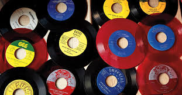
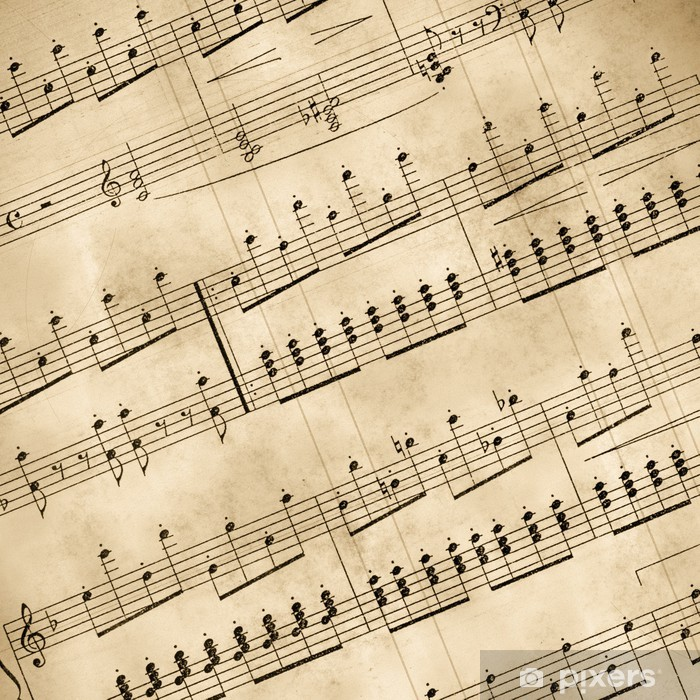
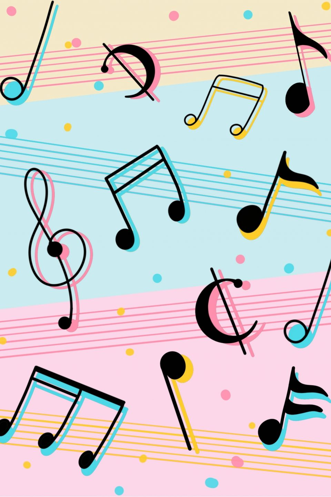
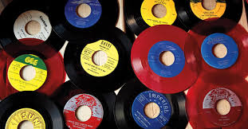
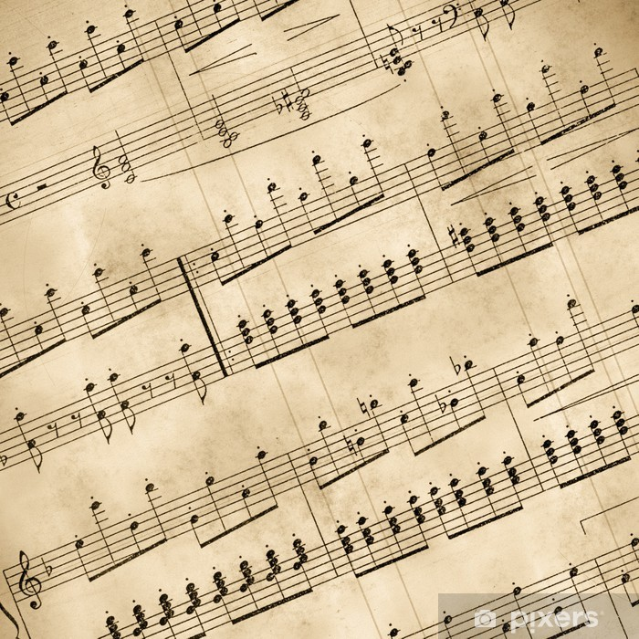
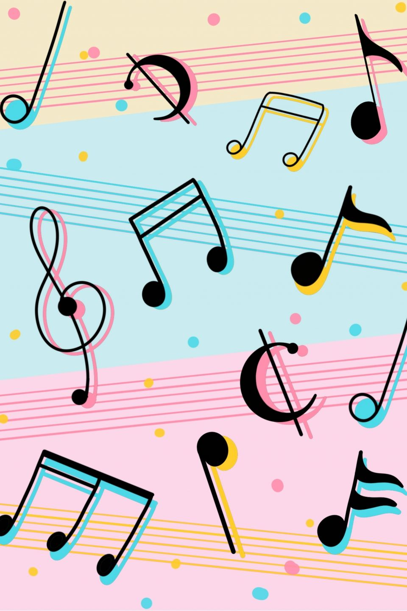

Time

I spend so much time listening to music. On an average day I'm listening to my playlist from the moment I wake up untill the time I get home.
In the morning I listen while I'm getting dressed and ready to go to school. On my way to school, for the short 5ish minutes, I am listening.
During my classes I have one ear open and one listening to music, this doesn't distract me from my classes, if anything, it helps me focus more.
After school, while at work im listening in one ear. On my way back home Im listening.
When I finally get home I'm usually done unless im playing video games in which I don't need to use sound queues, then I will.
In total throughout my entire day that totals to about, 11 hours, being 8am when I wake up and 7pm when I get home.
My Taste
After listening to music for so long everyday I have developed a quite unique music taste.
I listen to anything and everything, and I don't just mean I listen to a lot of genres, I mean EVERYTHING.
I could go from listneing to a death metal band to vibing with Mozart.
I developed a lot of my taste growing listening with my parents who listen to oldies, my brother who listen to rock type genres, and my sister who listens to rap and pop.
But as I grew older I became myself and have my own taste which expand upon each of my families genres.
Currently I find new genres and songs through listening to my discover weekly and finding artists I like and looking for similar artists.
 




